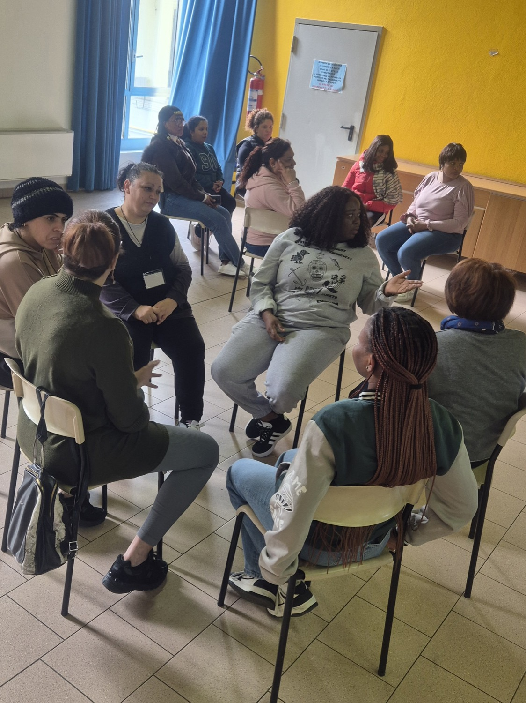
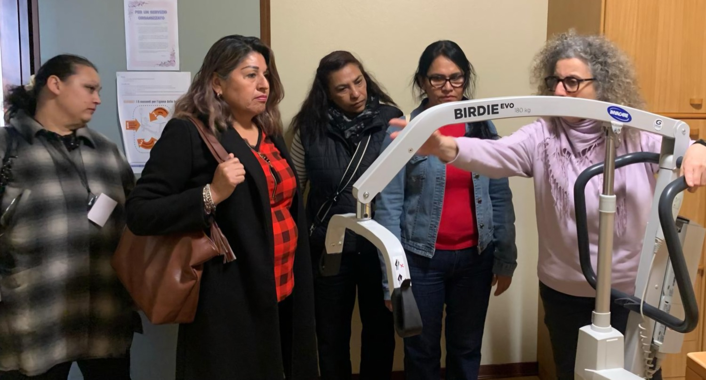
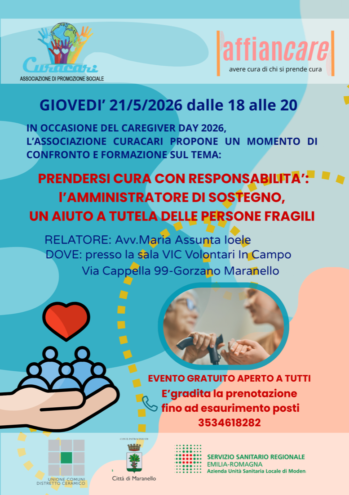
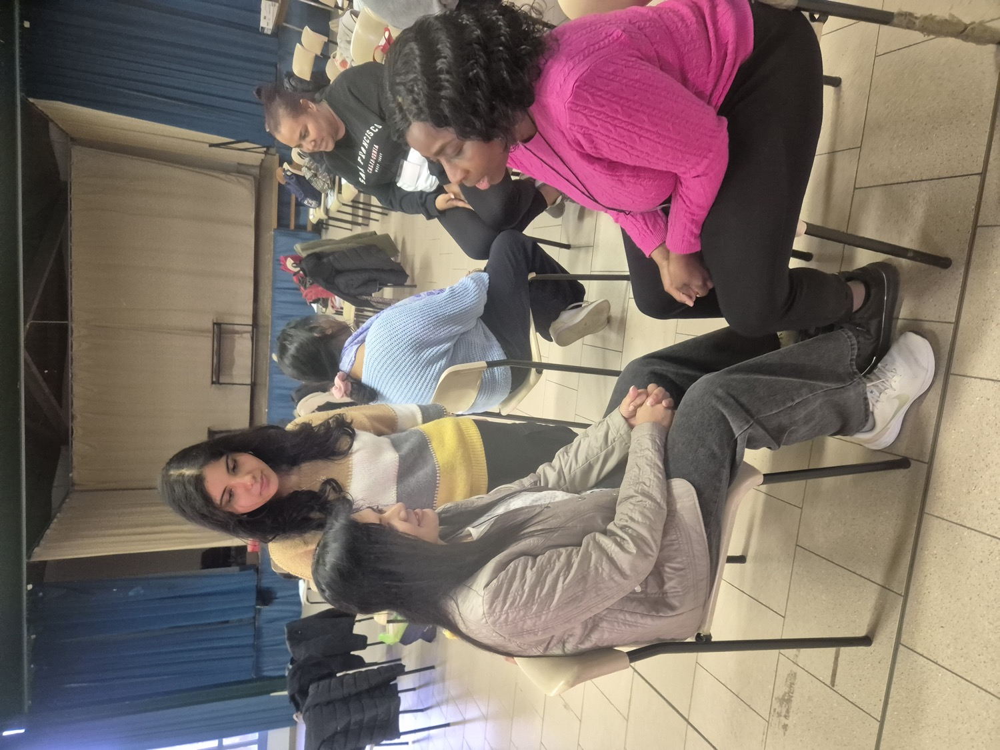

I nostri progetti
Formazione, sportelli, eventi e collaborazioni: qui trovi tutto quello che Curacari ha realizzato e sta costruendo per i caregiver del territorio.
In evidenza
Bando Fondazione di Modena
Ad ottobre 2025 Curacari ha vinto il bando Offerte Libere della Fondazione di Modena per realizzare il progetto formativo "Cura e Inclusione delle Assistenti Famigliari Migranti", con il sostegno del Comune di Modena e della Parrocchia San Giovanni Evangelista di Modena. Il progetto mira a valorizzare le competenze delle assistenti familiari migranti e a favorirne l'inclusione sociale e lavorativa nel territorio.

Corso di formazione per assistenti familiari
Nel 2024, insieme all'Unione dei Comuni del distretto ceramico e all'AUSL di Modena – Distretto di Sassuolo, abbiamo realizzato un percorso gratuito di 30 ore rivolto a chi desidera avviare o rafforzare la propria esperienza nell'assistenza domiciliare. Il corso ha fornito strumenti pratici, relazionali e culturali per affrontare con maggiore consapevolezza il lavoro di cura.

Seminario "Prendersi Cura dell'Altro"
A marzo 2024 si è svolto il seminario "Prendersi Cura dell'Altro", evento accreditato dal Collegio degli Assistenti Sociali, dedicato alla sensibilizzazione e formazione sui temi del caregiving e del sostegno psicologico.
Sono intervenute:
– Dssa Paola Rossetti, Dirigente dell'Unione dei Comuni (Ufficio Piano)
– Dssa Daniela Gariselli, Coordinatrice del tavolo caregiver
– Dssa Federica Ronchetti, Direttrice del Distretto Sanitario di Sassuolo (AUSL Modena)
– Dssa Rosella Di Feo, AUSL Modena – tavolo caregiver
– Prof.ssa Chiara Imperato, Università di Parma

Incontri tematici con esperti
Durante l'anno abbiamo promosso incontri formativi con professionisti del settore sociosanitario sui temi dell'autismo, dell'umanizzazione delle cure, della mobilizzazione e terapia occupazionale e della cura solidale. La partecipazione dei servizi della rete AUSL — COT, Centro Disturbi Cognitivi, CSM, SERD, ADI e Ufficio Prevenzione alla Salute — ha creato punti di riferimento concreti per i caregiver.
Sono intervenuti:
– Dssa Veronica Daidone, specialista in lesioni da decubito
– Dssa Matilde Vagnini (AUSL Modena) sull'umanizzazione delle cure
– Dott. Devis Trioschi (AUSL Modena) su mobilizzazione e recupero abilità residue
– Dssa Angela Azzaro sulla cura solidale

Formazione continua per assistenti familiari del distretto ceramico
Nel 2025 Curacari ha promosso un percorso di formazione continua rivolto agli assistenti familiari del distretto ceramico per acquisire nuove competenze nella cura alla persona. Il percorso ha incluso diversi interventi specialistici:
– Dssa Chiara Arletti, Direttrice della Fondazione Ghirlandina, sul tema dell'autismo
– Dott. Giovanni Avorgna, Coordinatore del CSM/SERT dell'AUSL di Sassuolo, sui disturbi psichiatrici e le dipendenze
– Dssa dell'ANFASS di Sassuolo sul tema della disabilità adulta e del ritardo mentale
– Dssa Rossella Di Feo sulla disabilità acquisita

Gruppo di crescita per nuovi volontari
Nel 2025 è stato avviato un percorso formativo dedicato ai nuovi volontari di Curacari, con incontri periodici pensati per favorire la crescita personale e professionale, rafforzare le competenze relazionali e preparare al lavoro di supporto ai caregiver.

Incontri di sostegno emotivo e Gruppi AMA per caregiver familiari
Nel 2025 Curacari ha continuato a organizzare incontri di sostegno emotivo e gruppi di Auto Mutuo Aiuto (AMA) rivolti ai caregiver familiari che si prendono cura di persone fragili. Uno spazio di ascolto, condivisione e supporto reciproco tra pari.

Inaugurazione nuova sede VIC — Caregiver Day
Il 24 maggio 2025, in occasione del Caregiver Day, è stata inaugurata la nuova sede dei Volontari in Campo (VIC) a Gorzano, Maranello. L'evento ha rappresentato un momento simbolico di apertura e radicamento nel territorio per tutta la comunità di Curacari.

Festival dell'Immigrazione — Teatro Astoria di Fiorano
Il 18 novembre 2025 Curacari ha partecipato al Festival dell'Immigrazione presso il Teatro Astoria di Fiorano, con l'obiettivo di promuovere l'inclusione sociale dei migranti e favorire il dialogo interculturale nella comunità.

Incontri individuali di sostegno e counseling
Nel 2025 Curacari ha offerto incontri individuali di sostegno e counseling rivolti a caregiver familiari e assistenti familiari, presso la sede VIC (Volontari in Campo) a Gorzano, Maranello e la Casa della Salute di Sassuolo – spazio della COT.

Progetto "Dedicare" — Ospedale di Sassuolo
Nel 2025 Curacari ha presentato lo Sportello Orienta Caregiver nell'ambito del progetto "Dedicare" dell'Ospedale di Sassuolo, un'iniziativa che prevede attività di formazione rivolte ai caregiver familiari durante tutto l'arco dell'anno.

Costruzione di rete con patronati e associazioni del territorio
Nel 2025 Curacari ha avviato una serie di incontri con patronati e associazioni locali con l'obiettivo di costruire una rete territoriale integrata a sostegno dei caregiver e delle persone fragili.

Incontri con le coordinatrici delle CRA del distretto
Nel 2025 Curacari ha incontrato le coordinatrici delle Case Residenziali per Anziani (CRA) del distretto ceramico per presentare progetti da sviluppare nel territorio a favore dei caregiver familiari e dei loro cari ospiti nelle strutture.

Confronto con la Neurologia dell'Ospedale di Baggiovara
Nel 2025 Curacari ha avviato un confronto con i referenti del reparto di Neurologia dell'Ospedale di Baggiovara, con particolare attenzione al tema dei pazienti giovani affetti da demenza, in collaborazione con la Prof.ssa Zambone.

Incontro con la Fondazione Muratori di Modena — Abitare e inclusione
Nel dicembre 2025 Curacari ha incontrato i responsabili della Fondazione Muratori di Modena per proporre un progetto formativo rivolto alle assistenti familiari che abitano nei condomini gestiti dalla Fondazione, con l'obiettivo di offrire opportunità di lavoro e inclusione per le migranti presenti sul territorio.

Reclutamento — Corso "Cura e Inclusione"
A gennaio 2026 Curacari ha avviato il reclutamento delle partecipanti al corso "Cura e Inclusione delle Assistenti Famigliari Migranti" di Modena, prima tappa del progetto vincitore del bando della Fondazione di Modena.

Percorso di formazione per assistenti familiari (40 ore)
Da febbraio ad aprile 2026 si è svolto il percorso di formazione per assistenti familiari: 40 ore concluse con il sostegno della Fondazione di Modena e il patrocinio dell'AUSL di Modena e del Comune di Modena.

Caregiver Day 2026 — l'Amministratore di Sostegno
Il 21 maggio 2026, in occasione del Caregiver Day, Curacari ha proposto un momento di confronto e formazione dal titolo "Prendersi cura con responsabilità: l'Amministratore di Sostegno, un aiuto a tutela delle persone fragili", con la relatrice Avv. Maria Assunta Ioele, presso la sala VIC – Volontari in Campo di Gorzano (Maranello). Evento gratuito con il patrocinio dell'Unione dei Comuni del Distretto Ceramico, della Città di Maranello e dell'AUSL di Modena.

Collocamento lavorativo delle assistenti familiari
A maggio 2026 Curacari ha promosso il collocamento lavorativo delle assistenti familiari nel territorio della provincia di Modena, con politiche attive per il sostegno lavorativo in collaborazione con le RSA del territorio. Un ringraziamento particolare alla Fondazione Ghirlandina e ad Anni Azzurri (Ducale 2 e 3) per la disponibilità e l'accoglienza alle nostre assistenti familiari.
Proposte e progetti in sviluppo
Curacari sta lavorando a proposte di progetti da presentare alla rete istituzionale del territorio per approfondire argomenti legati alle cure palliative e a temi che ampliano la conoscenza dei servizi disponibili per i caregiver familiari e le persone fragili del distretto.
Proponi un'idea →Curacari sui media

"Maranello: Inaugurata la sede dei Volontari in Campo"
"Curacari, una onlus per i caregiver: lavorerà su tutto il distretto"
"Prendersi cura dei caregiver: nasce l'associazione Curacari"
"A Maranello un percorso di formazione per gli assistenti famigliari"
Curacari APS riconosciuta come associazione caregiver sul territorio di Modena.